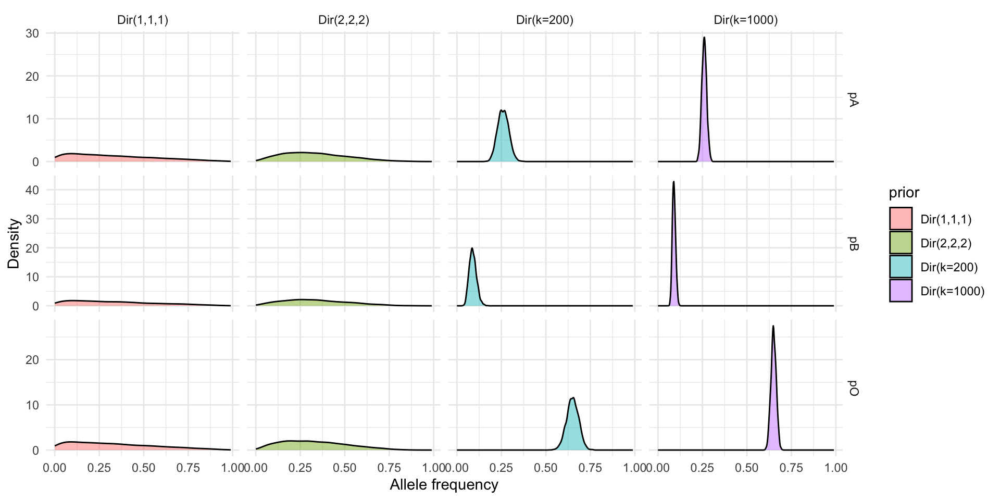

| Concept | Frequentist | Bayesian |
|---|---|---|
| Parameter | Fixed | Random |
| Data | Random | Fixed |
| Estimate | Point estimate | Posterior distribution |
| Confidence Interval | Interval with coverage | Credible interval |
| Hypothesis Test | Reject/Fail to reject | Posterior predictive check |
| P-value | Probability of data under null | Probability of hypothesis given data |
| Likelihood | Function of parameter given data | Function of data given parameter |
Lecture 04: Population Structure and Bayesian Methods in Statistical Genetics
PUBH 8878, Statistical Genetics
The Bayesian Paradigm
- Let \theta be unknown parameters, y observed data
- While frequentist methods treat \theta as fixed but unknown, Bayesian methods treat \theta as random variables

Sir Thomas Bayes
Anatomy of Bayes’ Rule
- Uncertainty in \theta is modeled via a prior distribution p(\theta)
- Observed data y are modeled via a likelihood p(y|\theta)
- Bayes’ theorem combines these to yield the posterior distribution p(\theta|y) \propto p(y|\theta)p(\theta)

Frequentist vs Bayesian Terminology
Interpretation of Intervals
Compare statements on intervals
- Frequentist: “Over many repeated samples, 95% of such intervals will contain the true parameter.”
- Bayesian: “Given the observed data and prior, there is a 95% probability that the parameter lies within this interval.”
Bayesian Pros and Cons
Pros
- Intuitive: direct probability statements about parameters
- Flexibility: complex models, hierarchical structures, small-n
- Incorporate prior knowledge or expert opinion
- Full uncertainty quantification via posterior distributions
Cons
- Computationally intensive: MCMC, variational inference
- Sensitivity to prior choice
- Not the status quo in many fields
Bayes vs Frequentist in Genetic Inference
- Frequentist pipelines (logistic regression + PCs, LMMs) offer calibrated p-values but often ignore uncertainty in latent structure
- Bayesian models propagate uncertainty in allele frequencies, effect sizes, and structure into downstream predictions (e.g., polygenic risk scores)
- Empirical Bayes shrinkage (e.g., LDpred) blurs the line: priors estimated from data approximate Bayesian decisions with frequentist guarantees
- Debate centers on transparency of priors vs. reliance on asymptotics—highlight assumptions explicitly to compare answers, not ideologies
Further Resources


Conjugacy
- A prior is conjugate to a likelihood if the posterior is in the same family as the prior.
- Example: Beta prior + Binomial likelihood to Beta posterior
Conjugacy Example
Consider the allele-frequency estimation setup introduced in Lecture 1.
- Previous experiment: observed x_{\text{prev}} = 3 successes (allele A) out of n_{\text{prev}} = 20 trials.
- Current data: x = 11 successes out of n = 27 trials.
- Parameter of interest: allele (“success”) frequency p.
Step 1: Prior
From the previous experiment (3 successes out of 20 trials), we can form a Beta prior:
Interpret \alpha and \beta as pseudo-counts of successes and failures, respectively. (Note that \text{Beta}(1,1) is uniform on [0,1].)
\begin{gather*} p \sim \text{Beta}(\alpha, \beta) \\ \alpha = x_{\text{prev}} + 1 = 4 \\ \beta = n_{\text{prev}} - x_{\text{prev}} + 1 = 18. \end{gather*}
Step 2: Likelihood
Current data likelihood (up to proportionality in p): L(p; x,n) \propto p^{x} (1-p)^{n-x} = p^{11}(1-p)^{16}.
Recognize this kernel as
\text{Beta}(x+1, n-x+1)=\text{Beta}(12,17)
Step 3: Posterior (Conjugacy)
Multiply prior and likelihood kernels: p^{\alpha-1}(1-p)^{\beta-1}\times p^{x}(1-p)^{n-x} = p^{(\alpha + x) - 1}(1-p)^{(\beta + n - x) - 1}.
Thus
\begin{align*} p | x \sim \text{Beta}(\alpha + x,\ \beta + n - x) &= \text{Beta}(4+11,\ 18+16) \\ &= \text{Beta}(15,34). \end{align*}
Posterior Summaries
Posterior mean: E[p|x] = \frac{15}{15+34} = 0.306 (shrinks slightly toward prior mean \frac{4}{22}=0.182 relative to MLE \hat p = 11/27 \approx 0.407).
Effective sample size intuition: prior contributes (\alpha+\beta-2)=20 pseudo-trials; data contribute 27 real trials.
Visualization

Non-Conjugate Models
- Conjugacy is convenient but limited to simple models
- Many realistic models (e.g., multinomial/Dirichlet with nonlinear transforms) are non-conjugate
- Bayesian inference in these models typically requires computational methods like MCMC or variational inference
- Richard McElreath has a great youtube video on MCMC
Bayesian Revisit: ABO Allele Frequencies
- Goal: Infer allele frequencies
(p_A, p_B, p_O)given phenotype counts(n_A, n_AB, n_B, n_O). - Frequentist (Lecture 03): EM treats latent genotypes for A and B phenotypes.
- Bayesian: Place a prior on allele frequencies; integrate (average) over uncertainty rather than impute expected counts.
Data & Sufficient Statistics
# Phenotype counts (same as EM slide)
counts <- list(nA = 725, nAB = 72, nB = 258, nO = 1073)
N <- sum(unlist(counts))
counts$nA
[1] 725
$nAB
[1] 72
$nB
[1] 258
$nO
[1] 1073- Total sample size: 2128 individuals.
- Minimal information for this model are the four phenotype counts.
Model Specification (Recap)
- Allele frequency vector: \boldsymbol p=(p_A,p_B,p_O), \boldsymbol p\sim\text{Dirichlet}(\boldsymbol\alpha).
- Under HWE, genotype frequencies: p_A^2, 2p_A p_O, p_B^2, 2 p_B p_O, 2 p_A p_B, p_O^2.
- Phenotype probabilities (aggregating ambiguous genotypes):
- P(\text{A}) = p_A^2 + 2 p_A p_O
- P(\text{AB}) = 2 p_A p_B
- P(\text{B}) = p_B^2 + 2 p_B p_O
- P(\text{O}) = p_O^2
- Likelihood: (n_A,n_{AB},n_B,n_O) \sim \text{Multinomial}(N, \boldsymbol q) with \boldsymbol q above.
Prior Families
Weakly Informative
- Weak: Dirichlet(1,1,1) (uniform over allele simplex)
- Mild: Dirichlet(2,2,2) (light shrink toward center)
Prior Families
Using Historical Data
- Consider global survey means (p_A = 0.26, p_B = 0.09, p_O = 0.65) (Mourant et al., 1976; Yamamoto, 2012).
- Dirichlet prior: \mathbf{\alpha} = k (0.26, 0.09, 0.65)
- Effective sample size idea: acts like observing k allele draws before current data (2N alleles in sample).
- Relative weight vs data (here total alleles = 2N = 4256):
- k = 200 ⇒ prior weight ≈ 4.5% of total information.
- k = 1000 ⇒ prior weight ≈ 19.0%.
Prior Shapes (Marginal Densities)
How to fit these models?
- So we have our data, likelihood, and priors
- We can use MCMC to sample from the posterior distribution of allele frequencies
- There exist many software packages to do this! We will use Stan (Carpenter et al., 2017) via the
cmdstanrR package

Stan Model
Step 1: Phenotype Probabilities
functions {
vector abo_pheno_probs(vector p) {
real pA = p[1];
real pB = p[2];
real pO = p[3];
vector[4] q;
q[1] = pA * pA + 2 * pA * pO; // A phenotype
q[2] = 2 * pA * pB; // AB phenotype
q[3] = pB * pB + 2 * pB * pO; // B phenotype
q[4] = pO * pO; // O phenotype
return q;
}
}- 1
-
Declare the
functionsblock (optional in Stan, but lets us encapsulate logic). - 2
- Define a helper that maps allele frequencies to phenotype probabilities.
- 3
- Extract components (purely for readability in later expressions).
- 4
-
Allocate a length-4 vector
q(A, AB, B, O) for phenotype probabilities. - 5
- Hardy–Weinberg genotype algebra aggregated into phenotype probabilities.
- 6
- Return the vector; braces close the function and block.
Stan Model
Step 2: Data & Transforms
data {
int<lower=0> nA;
int<lower=0> nAB;
int<lower=0> nB;
int<lower=0> nO;
vector<lower=0>[3] alpha; # Dirichlet hyperparameters
}
transformed data {
int<lower=0> N = nA + nAB + nB + nO;
array[4] int y = { nA, nAB, nB, nO };
}- 1
-
Raw observed counts and prior hyperparameters enter in the
datablock. - 2
- ABO phenotype counts (non-negative integers) per category.
- 3
-
Dirichlet prior parameters supplied from R (allow different priors via
alpha). - 4
-
transformed datapre-computes deterministic quantities once (saves work per draw). - 5
- Total sample size N used for reference or diagnostics.
- 6
- Assemble counts into an array to pass to the multinomial.
Stan Model
Step 3: Parameters & Derived q
parameters {
simplex[3] p; # (pA, pB, pO) on 2-simplex
}
transformed parameters {
vector[4] q = abo_pheno_probs(p);
}- 1
-
Declare unknown quantities to infer in
parameters. - 2
-
simplex[3]enforces positivity and sum-to-one constraints automatically. - 3
-
transformed parametersrecomputes per-draw derived values. - 4
- Reuse helper to obtain phenotype probabilities from allele frequencies.
Stan Model (Step 4: Prior & Likelihood)
- 1
-
The
modelblock contains all sampling statements contributing to log density. - 2
- Dirichlet prior supplies pseudo-count style regularization.
- 3
-
Multinomial likelihood over phenotype counts with probabilities
q.
Stan Model (Step 5: Generated Quantities)
generated quantities {
real log_lik = multinomial_lpmf(y | q);
vector[6] geno_freq;
real pA = p[1];
real pB = p[2];
real pO = p[3];
geno_freq[1] = pA * pA; # AA
geno_freq[2] = 2 * pA * pO; # AO
geno_freq[3] = pB * pB; # BB
geno_freq[4] = 2 * pB * pO; # BO
geno_freq[5] = 2 * pA * pB; # AB
geno_freq[6] = pO * pO; # OO
}- 1
- Post-processing: quantities saved per posterior draw (no effect on inference math).
- 2
- Store log-likelihood for model comparison / LOO / WAIC.
- 3
- Allocate genotype frequency vector (optional pedagogical output).
- 4
- Local aliases improve clarity when computing genotype frequencies.
- 5
- Hardy–Weinberg genotype probabilities (could be summarized later in R).
Compile Stan Model
- Stan uses C++ on the backend, so we need to compile the model once before fitting
cmdstan_model()handles compilation and returns a model object for sampling
Fit: Weak Prior (Dirichlet(1,1,1))
fit_weak <- abo_mod$sample(
data = list(
nA = counts$nA, nAB = counts$nAB, nB = counts$nB, nO = counts$nO,
alpha = rep(1, 3)
),
seed = 8878,
chains = 4, parallel_chains = 4,
iter_warmup = 1000, iter_sampling = 1000,
refresh = 0
)- 1
-
Execute the MCMC sampler using the
sample()method on the compiled model object. This will generate draws from the posterior distribution p(\boldsymbol{p} | \boldsymbol{y}). - 2
-
Pass data from R to Stan as a named list. The names must match the variables declared in the Stan
datablock. Here,alpha = rep(1, 3)sets aDirichlet(1,1,1)prior, which is uniform over the simplex. - 3
-
Specify MCMC sampler settings. We run multiple independent
chainsto diagnose convergence (e.g., via \hat{R}). Each chain has awarmupphase (for adaptation, discarded) and asamplingphase (kept for inference).
Running MCMC with 4 parallel chains...
Chain 1 finished in 0.0 seconds.
Chain 2 finished in 0.0 seconds.
Chain 3 finished in 0.0 seconds.
Chain 4 finished in 0.0 seconds.
All 4 chains finished successfully.
Mean chain execution time: 0.0 seconds.
Total execution time: 0.2 seconds.Posterior Summaries & Intervals (Weak Prior)

EM vs Bayesian Point Estimates
# A tibble: 2 × 5
method pA pB pO loglik
<chr> <dbl> <dbl> <dbl> <dbl>
1 EM 0.209 0.0808 0.710 -2304.
2 Posterior Mean 0.209 0.0810 0.710 NA Consolidated Posterior Comparison
Posterior histograms only (models as rows, alleles as columns). Dashed line marks posterior mean.

Population Substructure
- Features of a population which result from variation of expected allele frequencies across individuals
- Standard allele counting (\hat{p} = (2n_{AA} + n_{Aa}/2n)) will still be unbiased
- But, not all subjects may have the same probability of being represented in the sample
- Variance of estimate will be effected
Population Stratification
- Individuals in a population can be subdivided into mutually exclusive strata
- Within each strata the allele frequency is the same for all individuals
- Intuitively, we are partitioning a large dataset into multiple smaller datasets
Population Admixture
- When individuals in a population have a mixture of different genetic ancestries due to prior mixing of two or more populations
- Often result of migration
Population Admixture

From Korunes and Goldberg (2021)
Population Inbreeding
- Occurs when there is a preference for mating among relatives in a population or because geographic isolation of subgroups restricts mating choices
- Possibility that an offspring will inherit two copies of the same ancestral allele
- Define F, the inbreeding coefficient, as the probability that a random individual in the population inherits two copies of the same allele from a common ancestor
Admixture as a Confounder
- Consider the problem of estimating the effect of a SNP on a disease phenotype: \beta in P(Y=1) = \text{logit}^{-1}(\alpha + \beta G)
- Recent admixture mixes ancestries within individuals: genotype is a convex combination of source populations
- If phenotype prevalence differs by ancestry, local or global ancestry proportions act like hidden covariates
- Association tests must separate causal signal from ancestry-driven allele frequency differences
Detecting Structure: Diagnostics
- Inflation factors (\lambda_{GC}), QQ plots, and LD score intercepts flag confounding at the genome-wide scale
- F_{ST}, population differentiation statistics, and heterozygosity contrasts summarize divergence
- Eigen-decomposition of the genotype covariance (PCA) reveals axes of ancestry variation
Principal Components for Structure
- Construct the standardized genotype matrix Z and compute Z^T Z / M (with M markers)
- Top eigenvectors capture major ancestry gradients; outliers highlight batch or sample swaps
- Use the leading PCs as covariates in association tests or to stratify downstream analyses
- Classroom demo: leverage the
adegenet::eHGDPmicrosatellite panel (ships in R) to avoid VCF parsing—convert to CSV and color PCs by continental ancestry
# Load tidy microsatellite panel (1,350 individuals × 678 loci)
library(adegenet)
data("eHGDP")
hgdp_df <- genind2df(eHGDP, sep = "/")
write.csv(hgdp_df, "data/hgdp_microsat.csv", row.names = FALSE)
# Convert to allele count matrix, center columns (replace missing with locus means)
geno_mat <- scaleGen(eHGDP, center = TRUE, scale = FALSE, NA.method = "mean")
pc_fit <- prcomp(geno_mat, center = FALSE, scale. = FALSE)
# Map individuals to geographic regions for coloring
pop_info <- eHGDP@other$popInfo
pop_index <- as.integer(pop(eHGDP))
region <- pop_info$Region[pop_index]
plot_df <- data.frame(PC1 = pc_fit$x[, 1], PC2 = pc_fit$x[, 2], Region = region)
ggplot(plot_df, aes(PC1, PC2, color = Region)) +
geom_point(alpha = 0.7, size = 1.5) +
labs(title = "Population structure diagnostic", x = "PC1", y = "PC2") +
theme_minimal()Mixed Models & Kinship
- Genomic Relationship Matrices (GRMs) model polygenic background sharing via linear mixed models (LMMs)
- LMMs decompose phenotypic variance into fixed covariates + random genetic effects, soaking up stratification
- Software:
GCTA,BOLT-LMM,SAIGEscale to biobank settings; Bayesian analogues treat GRM variance components as parameters
Correction Toolbox
- Include global ancestry covariates (PCs, admixture proportions)
- Calibrate test statistics (genomic control) when residual inflation remains
- Within-ancestry, case-only, or family-based designs remove between-group confounding at the design stage
- Mixed-model association (REML/BLUP or Bayesian) further mitigates subtle relatedness
When PCA Is Not Enough
- Fine-scale substructure (Ashkenazi vs Sephardi, Yoruba vs Igbo) can survive adjustment on a handful of PCs
- Long-range LD, recent relatedness, and batch artefacts violate homoscedastic residual assumptions
- Hierarchical models can borrow strength across loci while preserving uncertainty in latent structure
Bayesian Admixture (STRUCTURE-Style)
- Latent populations k = 1,\ldots,K possess allele frequencies \theta_{k\ell} at locus \ell
- Individual ancestry proportions \boldsymbol{\pi}_i \sim \text{Dirichlet}(\boldsymbol{\alpha})
- Genotype y_{i\ell} \sim \text{Binomial}\left(2, \sum_{k} \pi_{ik} \theta_{k\ell}\right) assuming HWE within each ancestral population
- Posterior draws propagate ancestry/allele-frequency uncertainty into association testing, local ancestry, and polygenic prediction
Stan Model: Data & Parameters
data {
int<lower=1> N; // individuals
int<lower=1> L; // loci
int<lower=1> K; // ancestral pops
int<lower=0, upper=2> y[N, L]; // genotypes
vector<lower=0>[K] alpha; // ancestry prior
real<lower=0> a_theta;
real<lower=0> b_theta;
}
parameters {
array[N] simplex[K] pi; // admixture proportions
matrix<lower=0, upper=1>[K, L] theta; // allele freqs
}
transformed parameters {
matrix[N, L] p_mix;
for (n in 1:N)
for (l in 1:L)
p_mix[n, l] = dot_product(pi[n], col(theta, l));
}Stan Model: Likelihood & Priors
Fitting the Admixture Model in R
library(cmdstanr)
set.seed(887804)
rdirichlet <- function(n, alpha) {
k <- length(alpha)
gamma_draws <- matrix(rgamma(n * k, shape = alpha, rate = 1), ncol = k, byrow = TRUE)
sweep(gamma_draws, 1, rowSums(gamma_draws), "/")
}
N <- 180 # individuals
L <- 60 # loci
K <- 3 # ancestral populations
theta_true <- matrix(rbeta(K * L, shape1 = 2.5, shape2 = 5), nrow = K, ncol = L)
pi_true <- rdirichlet(N, rep(3, K))
y <- matrix(0L, nrow = N, ncol = L)
for (n in 1:N) {
for (l in 1:L) {
p_mix <- sum(pi_true[n, ] * theta_true[, l])
y[n, l] <- rbinom(1, size = 2, prob = p_mix)
}
}
stan_data <- list(
N = N,
L = L,
K = K,
y = y,
alpha = rep(1, K),
a_theta = 2.5,
b_theta = 5
)
admix_mod <- cmdstan_model(file.path("lectures", "stan", "structure_admixture.stan"))
admix_fit <- admix_mod$sample(
data = stan_data,
chains = 4,
parallel_chains = 4,
iter_warmup = 500,
iter_sampling = 500,
seed = 887804,
refresh = 0
)
admix_pi_draws <- admix_fit$draws(variables = c("pi"), format = "draws_array")
mcmc_hist(admix_pi_draws, pars = c("pi[1,1]")) +
geom_vline(xintercept = pi_true[2, 1], linetype = "dashed", color = "red")
pi_rvar <- as_draws_rvars(admix_fit$draws("pi"))$pi # N × K matrix of rvars
theta_rvar <- as_draws_rvars(admix_fit$draws("theta"))$theta # K × L matrix of rvars
# Posterior means (and SDs if you need them)
pi_est_mat <- mean(pi_rvar) # N × K numeric matrix
theta_est_mat <- mean(theta_rvar) # K × L numeric matrix
# Example diagnostics
pi_rmse <- sqrt(mean((pi_est_mat - pi_true)^2))
theta_rmse <- sqrt(mean((theta_est_mat - theta_true)^2))
pi_rmse
theta_rmsePosterior Summaries (Admixture)
- Compare posterior means \hat{\pi}_{ik} against the simulated truth to confirm the model recovers ancestry proportions (RMSE reported above)
- Posterior draws for \theta_{k\ell} provide credible intervals on population-specific allele frequencies for downstream association
- Posterior predictive checks or replicated phenotypes can diagnose residual stratification before moving to real data
Posterior Density Plots
- Convert Stan output to
posterior::rvarobjects to preserve array shapes automatically - Density overlays with dashed true values visually confirm the model recovers simulated parameters
pi_rvar <- as_draws_rvars(admix_fit$draws("pi"))$pi
theta_rvar <- as_draws_rvars(admix_fit$draws("theta"))$theta
rvar_to_long <- function(x, truth, idx_names) {
arr <- as.array(x)
dimnames(arr) <- list(
draw = seq_len(dim(arr)[1]),
idx1 = seq_len(dim(arr)[2]),
idx2 = seq_len(dim(arr)[3])
)
df <- as.data.frame(as.table(arr), stringsAsFactors = FALSE)
names(df) <- c("draw", idx_names, "value")
df[[idx_names[1]]] <- as.integer(df[[idx_names[1]]])
df[[idx_names[2]]] <- as.integer(df[[idx_names[2]]])
df$true <- truth[cbind(df[[idx_names[1]]], df[[idx_names[2]]])]
df
}
pi_long <- rvar_to_long(pi_rvar, pi_true, c("individual", "component"))
theta_long <- rvar_to_long(theta_rvar, theta_true, c("population", "locus"))
ggplot(filter(pi_long, individual <= 6),
aes(value, colour = factor(component), fill = factor(component))) +
geom_density(alpha = 0.25) +
geom_vline(aes(xintercept = true, colour = factor(component)),
linetype = "dashed", linewidth = 0.4) +
facet_wrap(~ individual, ncol = 3) +
labs(x = "Ancestry proportion", y = "Posterior density",
colour = "Component", fill = "Component",
title = "Posterior of π (true values dashed)") +
theme_minimal()
ggplot(filter(theta_long, locus <= 9),
aes(value, colour = factor(population), fill = factor(population))) +
geom_density(alpha = 0.25) +
geom_vline(aes(xintercept = true, colour = factor(population)),
linetype = "dashed", linewidth = 0.4) +
facet_wrap(~ locus, ncol = 3) +
labs(x = "Allele frequency", y = "Posterior density",
colour = "Population", fill = "Population",
title = "Posterior of θ (true values dashed)") +
theme_minimal()Summary & Next Steps
- Detect and correct stratification with diagnostics (λGC, PCA) and mixed-model adjustments before testing
- Bayesian framing exposes prior choices, enables posterior uncertainty on structure (ABO example, admixture Stan model)
- Next: Bayesian association (regression) and hierarchical shrinkage for polygenic traits, building on latent structure posteriors
Reference
Carpenter,B. et al. (2017) Stan: A Probabilistic Programming Language. Journal of Statistical Software, 76, 1–32.
Gelman,A. (2013) Bayesian Data Analysis 3rd ed. CRC Press.
Korunes,K.L. and Goldberg,A. (2021) Human genetic admixture. PLOS Genetics, 17, e1009374.
McElreath,R. (2020) Statistical rethinking: A Bayesian course with examples in R and Stan Second edition. CRC Press, Boca Raton.
Mourant,A.E. et al. (1976) The distribution of the human blood groups and other polymorphisms 2nd ed. Oxford University Press, London.
Yamamoto,F. (2012) ABO blood groups. Transfusion Medicine and Hemotherapy, 39, 213–220.